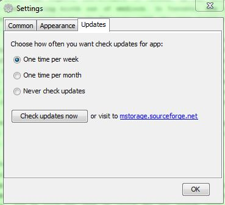

MStorage can do automatic check for new versions of app. You can adjust this behavior in Main -> Settings -> Updates. You can disable this feature and check for updates manually by clicking on "Check updates now" button.
